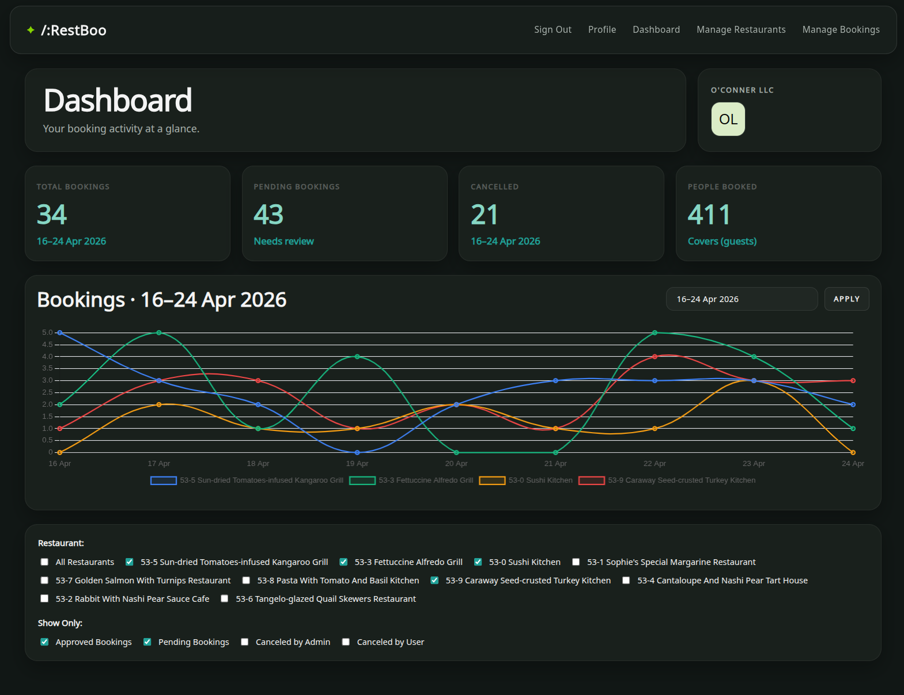

Featured Project
RestBoo
Role: Sole Front-End Engineer
RestBoo is a large-scale restaurant booking and management platform built for customers, restaurant partners, and administrators. I was the sole front-end engineer, responsible for building the user-facing interfaces across the application.
I developed the front-end for restaurant discovery, reservation workflows, profile management, restaurant administration, booking management, messaging, image uploads, map-based features, analytics dashboards, and role-based user experiences.
- Built customer, partner, and administration interfaces
- Implemented booking, messaging, profile, and dashboard workflows
- Created complex forms, validation flows, and CRUD interfaces
- Worked with analytics views, charts, uploads, and map integration
